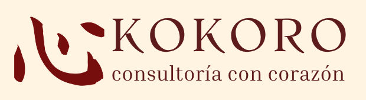
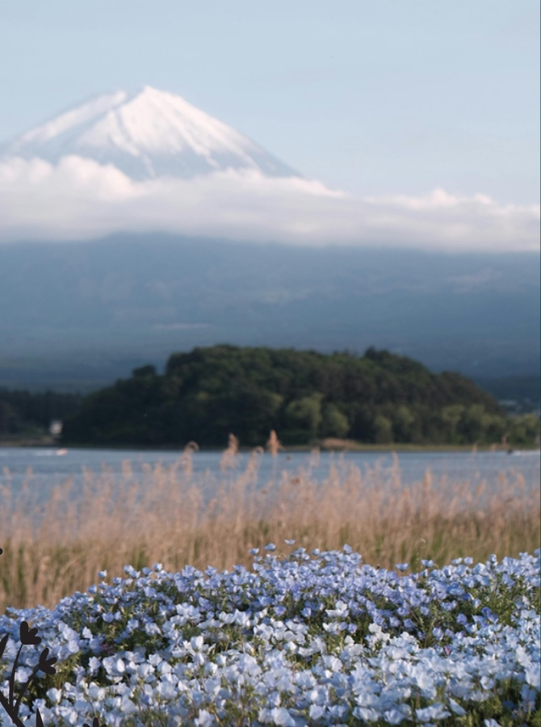
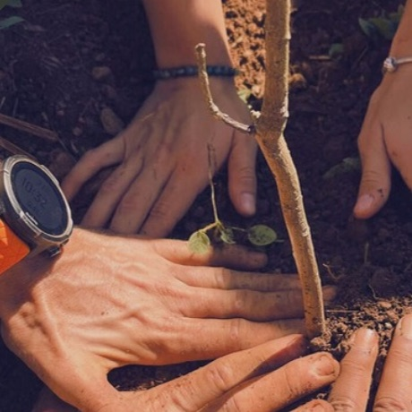

01
4 sessions
Diagnostic cycle
The essential first step. We map where you want to go, how to get there and what resources you have. Everything after is built on it.
Learn more →
I help NGOs and regenerative projects turn good ideas into the systems, funding and stories that let them grow.

We are in a new era of regeneration, where caring for the earth and caring for people are one mission.
Today, economic abundance often comes from exploiting nature, and protecting nature often means scarcity. Kokoro brings a holistic view to that problem.
It is time for mind, spirit and heart to align in strategic action. In Japanese this is kokoroire: acting from kokoro, the spiritual heart.

Every project starts with a diagnosis. From there, we choose the path that fits where your organisation is today.
The essential first step. We map where you want to go, how to get there and what resources you have. Everything after is built on it.
Learn more →We turn strategy into movement: improving your current model or creating new income lines, such as workshops, products or retreats, aligned with your purpose.
Learn more →I support fundraising and strategic alliances to scale your project, across public, private and collaborative funding, always with integrity and impact.
Learn more →Sustainable business models and financial plans that balance impact, income and wellbeing.
Strategies, scripts and audiovisual content that connect projects with the people and organisations who share their values.
Workshops, retreats and transformational events, from art and entrepreneurship to spirituality and regeneration.
Coaching, mindfulness and emotional tools for the people behind the project, building conscious leadership.
I build systems the way a forest grows: each stage creates the conditions for the next, until the system sustains itself and needs very little effort to run.
Find the true problem before trying to fix it.
Delivers: a diagnosis of the real gap
A simple solution to what is missing, built on what you already have.
Delivers: a working first version
Your team test-drives it in real work, with real people.
Delivers: evidence of what works
Release the blockages. One need usually reveals three more; solving them carries the system up.
Delivers: a system that sustains itself
The spiral has an end: when the system runs on its own, you no longer need me for it. After that, a light check every few months keeps it healthy.
Six months building fundraising and communications foundations as ClimateForce moves from charity to social enterprise.
A diagnosis and three-phase roadmap: fix the technical blocks to receiving donations, activate donors, then build a business model, so each phase frees the resources for the next.
Read the story →Lotus, a Buenos Aires events organiser, wanted more social impact and a new profit model. An alliance with CYNALL, an NGO working with rural communities, raised the funds to build CYNALL's ceramics workshop and grew Lotus's profits.
Read the story →I'm a strategic consultant, project manager and holistic coach. I studied economics and worked in international consulting at Accenture, until a crisis of meaning led me into personal development and regeneration.
Since then I've worked with NGOs and researched ways of living sustainably around the world. Today I combine business strategy with consciousness and impact, with caring for the earth at the centre.
“The past comes from competition. The future is built through collaboration.”
Tell me about your mission and where you feel stuck. Pick a time that suits you; it goes straight into my calendar.